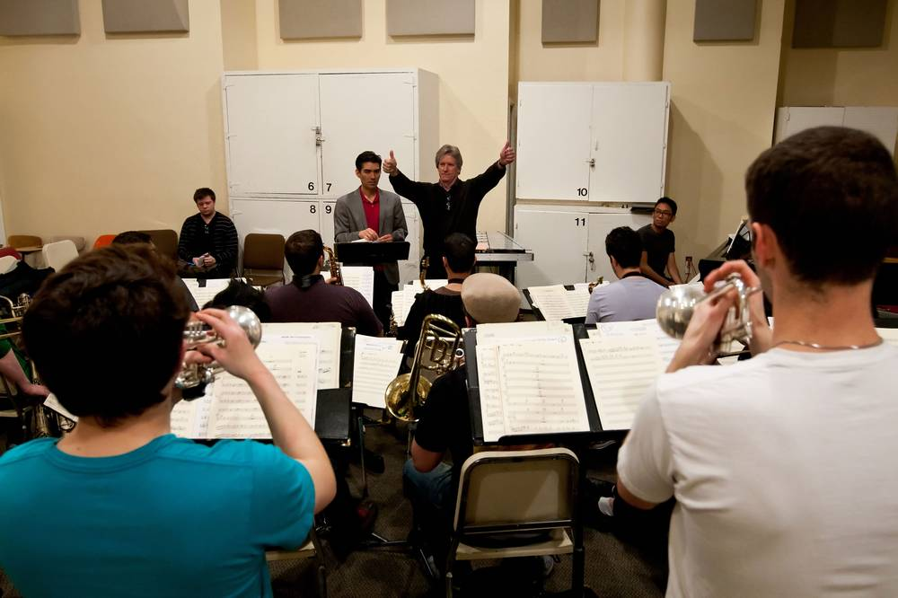

UNLV Jazz Ensemble

Jazz Ensemble I
All members of this award-winning ensemble are selected by audition each semester, with primary consideration given to sight-reading and jazz-improvisation skills. You must be enrolled in order to participate in this class. Jazz Ensemble I has:
* Monterey Next Generation Jazz Festival College Big Band Winner
* Down Beat Magazine Student Music Awards Large Jazz Ensemble Graduate College Outstanding Performance
* Toured Europe, Japan, Poland, South America, Spain, Portugal, and Morocco.
* Performed at the San Sebastian Jazz Festival.
* Shared the top billing with the Freddie Hubbard Sextet.
* Been featured in concerts and recordings with artists-in-residence and special guest artists throughout the year.
* Recorded several CDs that have received critical acclaim, including the Downbeat Five-Star Award for Muy Caliente.
* Reno Jazz Festival Winner College Combo Division and Outstanding College Performers
* IAJE Sisters In Jazz Quintet
* Performed in concert with Manhattan Transfer, Bebe Neuwirth, Ben Vereen, Marvin Hamlish, Tommy Tune and the casts of Forbidden Broadway, Jeckyll and Hyde.